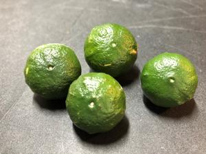
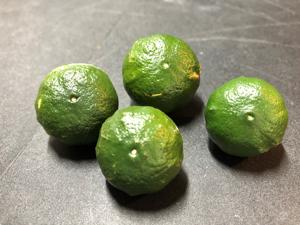
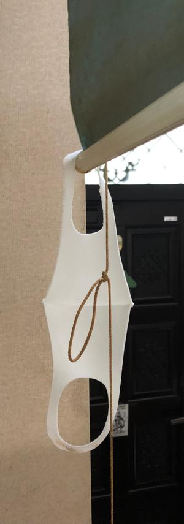
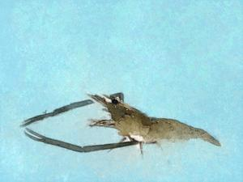
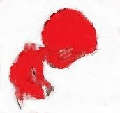
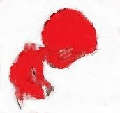

うるがいの話 ある日
最新:
奇妙の出来事
うるがいとは 前提知識です
画像をクリックすると『うるがいの話』サイトを表示します
 

うるがい(ｳﾙｶﾞｲ urugai)とは、『もずくがに』の名前でとても大きくなります。
たながー（ﾀﾅｶﾞｰtanagaa）とは手長えびのことで、何種類かあり大きいのは車
エビぐらいになります。
ぶながー(bunagaa)とは、赤い髪の毛、赤い身体、そして身長は１ｍ２０ｃｍ
ぐらい、川の蟹を食べているの目撃された。場所は沖縄県国頭郡大宜味村のと
ある村僕の隣近所に住んでいる爺さんから、聞いた話です。
2021年06月27日 (日）奇妙の出来事
16:05


 

数か月前から、玄関に雨漏りがしている。玄関の雨漏りはこの前直したのにと
雨漏りの箇所を探すが分からない。おとといも、玄関に水にしずくが溜まって
いる。ヨメが大騒ぎ、一緒に不思議だな、どこから雨漏りが。しかたないリフ
ォームの営業さんに相談するかと少し憂鬱になってきた。ん！、もしかして・
・・、走ってきた後に濡れたマスクを玄関の隠しスライドの端に掛けたせいか
しずくの溜まっている上を見ていると濡れたマスクがあった。ええ！、原因は
私か、怒られた！。熱くなった今日この頃、ジョギングをするとウレタンマス
クは汗でびっしょり濡れてしまい、呼吸も大変である。昨日から、マスクは玄
関の外で一時的に干すことにした。でも、奇妙の出来事の原因が分かりホット
する。昨日から、新しいサイト向けの画像を画像ソフトを駆使して作成した。
暇だよな、無職だからできることかも。